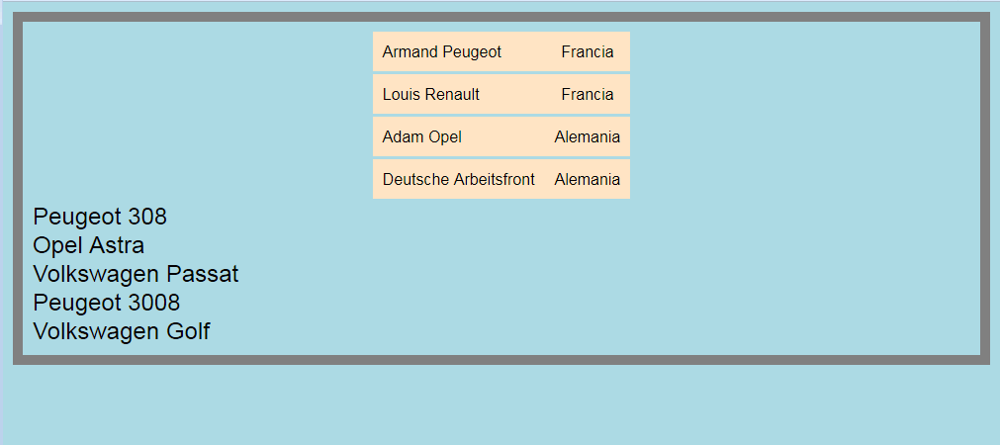

Resuelva los siguientes ejercicios guardando las respuestas en una carpeta cuyo nombre contenga su nombre y apellidos.
Escriba una hoja de estilo CSS para que el siguiente documento se vea en el navegador como muestra la imagen. La anchura del navegador es 1024px.
<?xml version="1.0" encoding="UTF-8"?>
<coches>
<fabricantes>
<fabricante id="Peugeot">
<fundador>Armand Peugeot</fundador>
<fundacion año="1882" />
<pais>Francia</pais>
</fabricante>
<fabricante id="Renault">
<fundador>Louis Renault</fundador>
<fundacion año="1899" />
<pais>Francia</pais>
</fabricante>
<fabricante id="Opel">
<fundador>Adam Opel</fundador>
<fundacion año="1862" />
<pais>Alemania</pais>
</fabricante>
<fabricante id="Volkswagen">
<fundador>Deutsche Arbeitsfront</fundador>
<fundacion año="1937" />
<pais>Alemania</pais>
</fabricante>
</fabricantes>
<modelos>
<modelo fabricante="Peugeot">
<nombre>Peugeot 308</nombre>
<segmento>C</segmento>
<inicio año="2007" />
</modelo>
<modelo fabricante="Opel">
<nombre>Opel Astra</nombre>
<segmento>C</segmento>
<inicio año="1991" />
</modelo>
<modelo fabricante="Volkswagen">
<nombre>Volkswagen Passat</nombre>
<segmento>D</segmento>
<inicio año="1973" />
</modelo>
<modelo fabricante="Peugeot">
<nombre>Peugeot 3008</nombre>
<segmento>C</segmento>
<inicio año="2007" />
</modelo>
<modelo fabricante="Volkswagen">
<nombre>Volkswagen Golf</nombre>
<segmento>C</segmento>
<inicio año="2007" />
</modelo>
</modelos>
<premios>
<premio nombre="coche del año Europa" año="2017" modelo="Peugeot 3008" />
<premio nombre="coche del año Europa" año="2016" modelo="Opel Astra" />
<premio nombre="coche del año Europa" año="2015" modelo="Volkswagen Passat" />
<premio nombre="coche del año Europa" año="2014" modelo="Peugeot 308" />
<premio nombre="coche del año Europa" año="2013" modelo="Volkswagen Golf" />
</premios>
</coches>

A partir del mismo documento XML del ejercicio 1, escriba las expresiones XPath que devuelvan exactamente las respuestas indicadas en los cuadros. Escriba todas las expresiones XPath en un único fichero de texto, numerando las respuestas.
modelo="Peugeot 3008"
modelo="Opel Astra"
modelo="Volkswagen Passat"
modelo="Peugeot 308"
modelo="Volkswagen Golf"
Opel Astra
Volkswagen Passat
fabricante="Volkswagen"
id="Volkswagen"
año="1973"
año="2015"
año="2013"